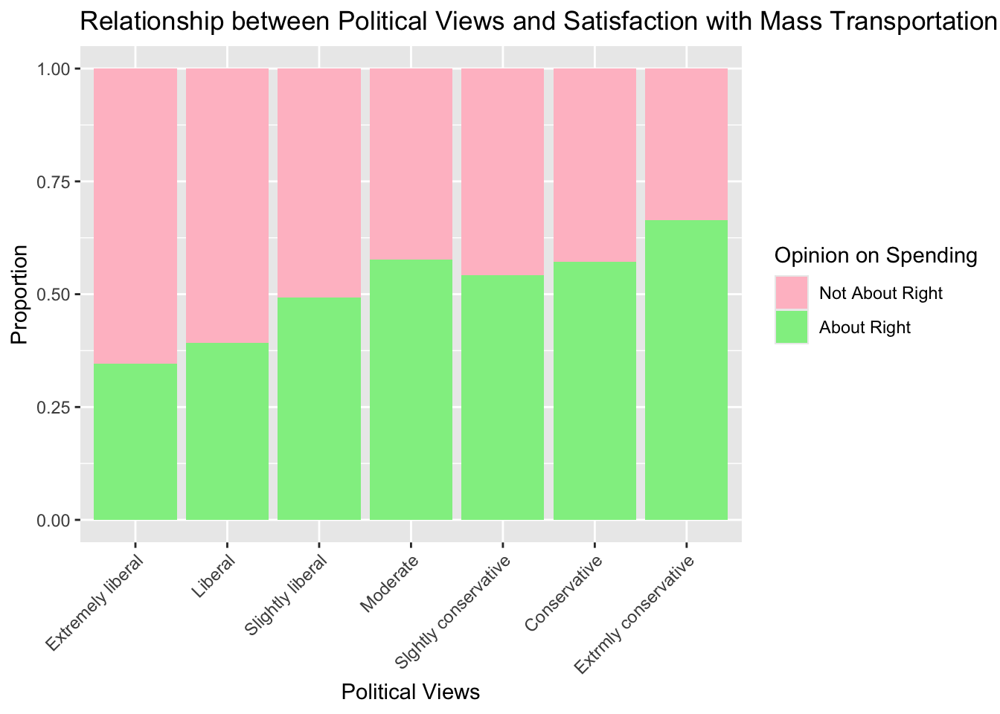

Code
library(dplyr)
library(ggplot2)
library(readr)
library(modelsummary)
library(tidyr)
library(knitr)
library(easystats)
library(broom)
library(emmeans)
library(marginaleffects)
library(performance)
library(arm)
library(modelsummary)Princeton University
If you are fitting a model, display the model output in a neatly formatted table. (The gt tidy and kable functions can help!). Modelsummary also looks good(https://vincentarelbundock.github.io/modelsummary/articles/modelsummary.html)
If you are creating a plot, use ggplot or baseand make sure they are publication ready. That means there are clear labels for all axes, titles, etc.
Commit and push your work to GitHub regularly, at least after each exercise. Write short and informative commit messages.
When you’re done, we should be able to knit the final version of the QMD in your GitHub as a HTML.
Let’s begin by making a binary variable for respondents’ views on spending on mass transportation. Create a new variable that is equal to “1” if a respondent said spending on mass transportation is about right and “0” otherwise. Then plot the proportion of the response variable, using informative labels for each category.
library(dplyr)
library(ggplot2)
library(readr)
library(modelsummary)
library(tidyr)
library(knitr)
library(easystats)
library(broom)
library(emmeans)
library(marginaleffects)
library(performance)
library(arm)
library(modelsummary)# load data
data <- read.csv("data/gss2016.csv")data <- data %>%
mutate(mass_trans_spend_right = if_else(natmass == "About right", 1, 0))
#Get proportions
mass_spend_summary <- data %>%
count(mass_trans_spend_right) %>%
mutate(proportion = n / sum(n))
#Format for plot
mass_spend_long <- pivot_longer(mass_spend_summary, names_to = "opinion", values_to = "proportion", cols = proportion)
#Factorise for plot
mass_spend_long$mass_trans_spend_right <- as.factor(mass_spend_long$mass_trans_spend_right)
#Make plot
ggplot(mass_spend_long, aes(x = "", y = proportion, fill = factor(mass_trans_spend_right))) +
geom_bar(stat = "identity", position = "fill") +
geom_text(aes(label = scales::percent(proportion)),
position = position_fill(vjust = 0.5),
color = "black", size = 3.5) +
scale_fill_manual(values = c("0" = "pink", "1" = "light green"),
labels = c("0" = "Not Right Amount", "1" = "About Right Amount")) +
labs(x = "", y = "Proportion", fill = "Opinion") +
ggtitle("Opinions on Mass Transportation Spending") +
theme(axis.title.x = element_blank(),
axis.text.x = element_blank(),
axis.ticks.x = element_blank())
Recode
polviewsso it is a factor with levels that are in an order that is consistent with question on the survey. Note how the categories are spelled in the data.
data <- data %>%
mutate(polviews = factor(polviews,
levels = c("Extremely liberal", "Liberal", "Slightly liberal",
"Moderate",
"Slghtly conservative", "Conservative", "Extrmly conservative"),
ordered = TRUE))Make a plot of the distribution of
polviews
#Get proportions
polviews_summary <- data %>%
count(polviews) %>%
mutate(proportion = n / sum(n))
#Format for plot
polviews_long <- pivot_longer(polviews_summary, names_to = "opinion", values_to = "proportion", cols = proportion)
#Make plot
ggplot(polviews_long, aes(x = "", y = proportion, fill = factor(polviews))) +
geom_bar(stat = "identity", position = "fill") +
geom_text(aes(label = scales::percent(proportion)),
position = position_fill(vjust = 0.5),
color = "black", size = 3.5) +
ggtitle("Distribution of political views") +
labs(x = "", y = "Proportion", fill = "Political View") +
theme(axis.title.x = element_blank(),
axis.text.x = element_blank(),
axis.ticks.x = element_blank())Which political view occurs most frequently in this data set?
The most frequent political view is “Moderate”.
Make a plot displaying the relationship between satisfaction with mass transportation spending and political views. Use the plot to describe the relationship the two variables.
ggplot(data, aes(x = polviews, fill = factor(mass_trans_spend_right))) +
geom_bar(position = "fill") +
scale_fill_manual(values = c("0" = "pink", "1" = "light green"),
labels = c("0" = "Not About Right", "1" = "About Right")) +
labs(x = "Political Views", y = "Proportion", fill = "Opinion on Spending",
title = "Relationship between Political Views and Satisfaction with Mass Transportation Spending") +
theme(axis.text.x = element_text(angle = 45, hjust = 1)) 
The more conservative one’s political views are the more they think the amount of spending on mass transportation is correct.
Recode age so that is a numeric variable. Note: Before making the variable numeric, you will need to replace the values “89 or older” with a single value.
data <- data %>%
mutate(age = if_else(age == "89 or older", "89", age),
age = as.numeric(age))Plot the distribution of age.
ggplot(data, aes(x = age)) +
geom_histogram(binwidth = 5, color = "black", fill = "lightblue") +
labs(title = "Distribution of Age",
x = "Age",
y = "Frequency") +
theme_minimal()Let’s start by fitting a model with just the intercept
intercept_only_model <- glm(
data = data,
family = binomial(link="logit"),
mass_trans_spend_right ~ 1
)
intercept_only_model %>%
tidy() %>%
kable()| term | estimate | std.error | statistic | p.value |
|---|---|---|---|---|
| (Intercept) | 0.1190594 | 0.0393685 | 3.024229 | 0.0024927 |
b0 <- coef(intercept_only_model) # get coef
exp(b0) / (1 + exp(b0)) # logistic transform(Intercept)
0.5297297 ci_lower = b0 - 1.96 * 0.0393685
ci_upper = b0 + 1.96 * 0.0393685
p_lower = exp(ci_lower) / (1 + exp(ci_lower))
p_upper = exp(ci_upper) / (1 + exp(ci_upper))Interpret the intercept in the context of the data. Convert the \(\beta_0\) parameter out of the log-odds metric to the probability metric. Make sure to include the 95% confidence intervals. Then interpret the results in a sentence or two–what is the basic thing this probability tells us about?
The log-odds of a participant thinking that the spending on mass transportation is “about right” when no other predictors are included in the model is 0.119. The 95% confidence interval for the intercept in log-odds scale ranged from 0.041 to 0.196.
The overall probability of individuals thinking the amount of spending on mass transportation was about right is 52.9% [95% CI: 51.05% to 54.89%].
Now let’s fit a model using the demographic factors -
age,sex,sei10- to predict the odds a person is satisfied with spending on mass transportation. Make any necessary adjustments to the variables so the intercept will have a meaningful interpretation. Neatly display the model coefficients (do not display the summary output)
data$sex <- factor(data$sex, levels = c("Male", "Female"))
m1 <- glm(mass_trans_spend_right ~ age + sex + sei10, data = data, family = binomial(link = "logit"))
m1 %>%
tidy(exponentiate = TRUE) %>%
kable()| term | estimate | std.error | statistic | p.value |
|---|---|---|---|---|
| (Intercept) | 1.7677492 | 0.1409061 | 4.043169 | 0.0000527 |
| age | 0.9938530 | 0.0022824 | -2.701502 | 0.0069027 |
| sexFemale | 1.2914219 | 0.0798020 | 3.204732 | 0.0013519 |
| sei10 | 0.9937922 | 0.0016609 | -3.749229 | 0.0001774 |
Consider the relationship between sex and one’s opinion about spending on mass transportation. Interpret the coefficient of sex in terms of the logs odds and OR of being satisfied with spending on mass transportation. What are the predicted probabilities for males and females on support for spending on mass transportation? Please include the 95% CIs around each estimate.
m1 %>%
tidy() %>%
kable()| term | estimate | std.error | statistic | p.value |
|---|---|---|---|---|
| (Intercept) | 0.5697071 | 0.1409061 | 4.043169 | 0.0000527 |
| age | -0.0061659 | 0.0022824 | -2.701502 | 0.0069027 |
| sexFemale | 0.2557439 | 0.0798020 | 3.204732 | 0.0013519 |
| sei10 | -0.0062271 | 0.0016609 | -3.749229 | 0.0001774 |
m1 %>%
tidy(exponentiate = TRUE) %>%
kable()| term | estimate | std.error | statistic | p.value |
|---|---|---|---|---|
| (Intercept) | 1.7677492 | 0.1409061 | 4.043169 | 0.0000527 |
| age | 0.9938530 | 0.0022824 | -2.701502 | 0.0069027 |
| sexFemale | 1.2914219 | 0.0798020 | 3.204732 | 0.0013519 |
| sei10 | 0.9937922 | 0.0016609 | -3.749229 | 0.0001774 |
bsex <- coef(m1)["sexFemale"]
ci_lower_lo = bsex - 1.96 * 0.0798020
ci_upper_lo = bsex + 1.96 * 0.0798020
ci_lower_or = 1.29 - 1.96 * 0.0798020
ci_upper_or = 1.29 + 1.96 * 0.0798020
emm_sex <- emmeans(m1, "sex", type = "response")Being female (as compared to male) is associated with an increase in the log-odds of being satisfied with spending on mass transportation by 0.2557439 units (95% CI [0.09, 0.41]), holding all other variables constant. This equates to the odds of thinking the spending amount is right in females being 1.29 times the odds of thinking this in men (95% CI [1.13, 1.44]).
The predicted probability for females to be satisfied with spending on mass transportation is 55.9% (95% CI [53.3%, 58.5%]) and that of males is 49.5% (95% CI [46.7%, 52.4%]).
Consider the relationship between age and one’s opinion about spending on mass transportation. Interpret the coefficient of age in terms of the logs odds and OR of being satisfied with spending on mass transportation. Please include the 95% CIs around each estimate.
bage <- coef(m1)["age"]
ci_lower_lo = bage - 1.96 * 0.0022824
ci_upper_lo = bage + 1.96 * 0.0022824
ci_lower_or = 0.9937922 - 1.96 * 0.0016609
ci_upper_or = 0.9937922 + 1.96 * 0.0016609A one unit increase in age is associated with a decrease in the log-odds of being satisfied with spending on mass transportation by 0.00616 units (95% CI [-0.0106, -0.00169]), holding all other variables constant. The odds ratio is less than 1 (0.9938530), which confirms the negative relationship implied by the log-odds coefficient. Specifically, for each additional unit of age, the odds of being satisfied with mass transportation spending decrease by a factor of about 0.994, or approximately 0.6% per unit increase in age, holding other factors constant (95% CI [0.989, 0.998]).
Consider the relationship between SES and one’s opinion about spending on mass transportation. Interpret the coefficient of SES in terms of the logs odds and OR of being satisfied with spending on mass transportation. Please include the 95% CIs around each estimate.
bses <- coef(m1)["sei10"]
ci_lower_lo = bses - 1.96 * 0.0022824
ci_upper_lo = bses + 1.96 * 0.0022824
ci_lower_or = 0.9938530 - 1.96 * 0.0022824
ci_upper_or = 0.9938530 + 1.96 * 0.0022824A one unit increase in SES index is associated with a decrease in the log-odds of being satisfied with spending on mass transportation by 0.0062 units (95% CI [-0.0107, -0.0017]), holding all other variables constant. The odds ratio is less than 1 (0.9937922), which confirms the negative relationship implied by the log-odds coefficient. Specifically, for each additional unit of SES index, the odds of being satisfied with mass transportation spending decrease by a factor of about 0.993, or approximately 0.7% per unit increase in SES index, holding other factors constant (95% CI [0.989, 0.998]).
Calculate the marginal effects of sex, age, and SES on mass transportation spending. You can use the
marginspackage functionmarginsdiscussed in your textbook or you can use themarginaleffectspackageavg_slopeavg_comparisonsdiscussed in lecture. Interpret each estimate.
avg_comparisons(m1, comparison = "difference") %>%
kable()| term | contrast | estimate | std.error | statistic | p.value | s.value | conf.low | conf.high |
|---|---|---|---|---|---|---|---|---|
| age | +1 | -0.0015151 | 0.0005577 | -2.716594 | 0.0065957 | 7.244249 | -0.0026082 | -0.0004220 |
| sei10 | +1 | -0.0015301 | 0.0004037 | -3.790014 | 0.0001506 | 12.696621 | -0.0023214 | -0.0007388 |
| sex | Female - Male | 0.0630688 | 0.0196461 | 3.210250 | 0.0013262 | 9.558493 | 0.0245632 | 0.1015743 |
The marginal effect of age is -0.0015153 (95% CI [-0.0026, -0.0004]). So, for each additional unit increase of age, the probability of being satisfied with mass transportation spending decreases by approximately 0.15 percentage points, holding other factors constant (p < 0.01).
The marginal effect of SES is -0.0015304 (95% CI [-0.0023, -0.0007]). For each one-unit increase in the socioeconomic index, the probability of being satisfied with mass transportation spending decreases by approximately 0.15 percentage points, holding other variables constant.
The marginal effect for being female compared to male is 0.0630688 (95% CI [0.024, 0.101]). This indicates that females are, on average, about 6.31 percentage points more likely than males to be satisfied with mass transportation spending, holding other factors constant.
Conduct a drop-in-deviance/likelihood ratio test to determine if polviews is a significant predictor of attitude towards spending on mass transportation. Name these two models
fit2andfit3, respectively. Compare the two models.
fit2 <- glm(
data = data,
family = binomial,
mass_trans_spend_right ~ age + sex + sei10
)
fit3 <- glm(
data = data,
family = binomial,
mass_trans_spend_right ~ age + sex + sei10 + polviews
)
test_likelihoodratio(fit2, fit3) %>% kable()| Name | Model | df | df_diff | Chi2 | p | |
|---|---|---|---|---|---|---|
| fit2 | fit2 | glm | 4 | NA | NA | NA |
| fit3 | fit3 | glm | 10 | 6 | 63.02844 | 0 |
Is the model with polviews better than the model without?
Let’s plot the results
Use your model to visualize:
The relationship between one’s political views and their attitude towards spending on mass transportation
The relationship between sex and attitude towards spending on mass transportation
The relationship between SES and their attitude towards spending on mass transportation. https://solomonkurz.netlify.app/blog/2021-09-22-sexy-up-your-logistic-regression-model-with-logit-dotplots/ has a cool example to use
adjust the various settings in your plot to make it look professional.
You can use ggeffects to get the predicted probabilities for these models.
library(ggeffects)
colors <- c("Extremely liberal" = "black",
"Liberal" = "#0e2f44", # Dark blue
"Slightly liberal" = "#1d5a6c", # Less dark blue
"Moderate" = "#358ca3", # Medium blue
"Slghtly conservative" = "#71b9d1", # Light blue
"Conservative" = "#a6dcef", # Lighter blue
"Extrmly conservative" = "#d0f0fd") # Very light blue
pp_pol <- ggemmeans(fit3, terms = c("polviews"))
# Adjusted plot with gradient colors
pol_plot <- ggplot(pp_pol, aes(x = x, y = predicted, color = x)) +
geom_point(size = 2) +
geom_errorbar(aes(ymin = conf.low, ymax = conf.high), width = 0.2) +
scale_color_manual(values = colors) +
labs(title = "Effect of Political Views on Satisfaction with Mass Transportation",
x = "Political Views", y = "Predicted Probability",
color = "Political Views") +
theme_minimal()
pol_plot
pp_sex <- ggemmeans(fit3, terms = c("sex"))
sex_plot <- ggplot(pp_sex, aes(x = x, y = predicted, color = x)) +
geom_point(size = 2) +
geom_errorbar(aes(ymin = conf.low, ymax = conf.high), width = 0.2) +
labs(title = "Effect of Sex on Satisfaction with Mass Transportation",
x = "Sex", y = "Predicted Probability",
color = "Sex") +
theme_minimal()
pp_sex# Predicted probabilities of mass_trans_spend_right
sex | Predicted | 95% CI
---------------------------------
Male | 0.48 | [0.44, 0.51]
Female | 0.55 | [0.51, 0.58]
Adjusted for:
* age = 48.90
* sei10 = 46.07pp_ses <- ggemmeans(fit3, terms = "sei10")
ses_plot <- ggplot(pp_ses, aes(x = x, y = predicted)) +
geom_line(color = "#2c7fb8", size = 1) +
geom_ribbon(aes(ymin = conf.low, ymax = conf.high), fill = "#2c7fb8", alpha = 0.2) + # Add a confidence interval band
labs(title = "Effect of SES on Satisfaction with Mass Transportation",
x = "Socioeconomic Status", y = "Predicted Probability") +
theme_minimal() +
theme(legend.position = "none")
ses_plotbinned_residuals(fit2)Warning: About 86% of the residuals are inside the error bounds (~95% or higher would be good).r2_mcfadden(fit2)# R2 for Generalized Linear Regression
R2: 0.010
adj. R2: 0.009The model fit is not the best. Take a look at the binned residual plots for each continuous predictor variable and look at linearity. Is there a predictor that sticks out? What can we do to improve model fit in this case?
binned_residuals(fit2, term="sei10")Warning: About 88% of the residuals are inside the error bounds (~95% or higher would be good).binned_residuals(fit2, term="age")Ok: About 98% of the residuals are inside the error bounds.binned_residuals(fit2, term="sei10") %>% plot(show_dots=TRUE)binned_residuals(fit2, term="age") %>% plot(show_dots=TRUE)Let’s put this all together in a write-up. Be sure your answer includes the interpretation of the model coefficients and associated hypothesis tests or confidence intervals used to support your response. Include a table of the results (using modelsummary) and figures highlighting significant effects. Make sure your write-up is in APA style and the figures and tables are publication-ready.
Table 1 presents the model coefficients, standard errors, z-values, and p-values, providing insight into the influence of each predictor. A one unit increase in age was associated with a decresed probability of being satisfied with mass transportation spending, b = -0.007, 95% CI [-0.012, -0.003], p < .001, OR = 0.992, 95% CI [0.987, 0.996]. Looking at the average marginal effect, 1 unit increases in age were associated with a 0.18% decrease in satisfaction with mass transportation spending. The probability of females being satisfied with mass transportation spending was 6.6% higher, b= 0.27, 95% CI [0.11, 0.43], p < .001; OR = 1.31, 95% CI [1.15, 1.47] (Figure 1). A one unit increase in SES was associated with a decresed probability of being satisfied with mass transportation spending, b = -4.81e-03, 95% CI [-8.14e-03, -1.49e-03], p = 0.005; Std. beta = -0.12, 95% CI [-0.20, -0.04]). Looking at the average marginal effect, 1 unit increases in age were associated with a 0.15% decrease in satisfaction with mass transportation spending (Figure 2). The significant positive effect of the linear term for political views suggests that individuals with more conservative political views are more likely to report satisfaction with mass transportation spending (beta = 1.10, 95% CI [0.77, 1.44], p < .001; Std. beta = 1.10, 95% CI [0.77,1.44]) although this trend does not seem to follow perfect linear increase. The probability of extreme conservatives being satisfied with mass transportation spending was 31.9% higher than for extreme liberals (Figure 3).
| (1) | |
|---|---|
| (Intercept) | 0.517 |
| (0.148) | |
| age | −0.008 |
| (0.002) | |
| sexFemale | 0.274 |
| (0.081) | |
| sei10 | −0.005 |
| (0.002) | |
| polviews.L | 1.099 |
| (0.172) | |
| polviews.Q | −0.150 |
| (0.163) | |
| polviews.C | 0.132 |
| (0.145) | |
| polviews^4 | 0.206 |
| (0.115) | |
| polviews^5 | −0.060 |
| (0.114) | |
| polviews^6 | −0.086 |
| (0.095) | |
| Num.Obs. | 2590 |
| AIC | 3502.8 |
| BIC | 3561.4 |
| Log.Lik. | −1741.384 |
| F | 10.367 |
| RMSE | 0.49 |
Table 1
pol_plot